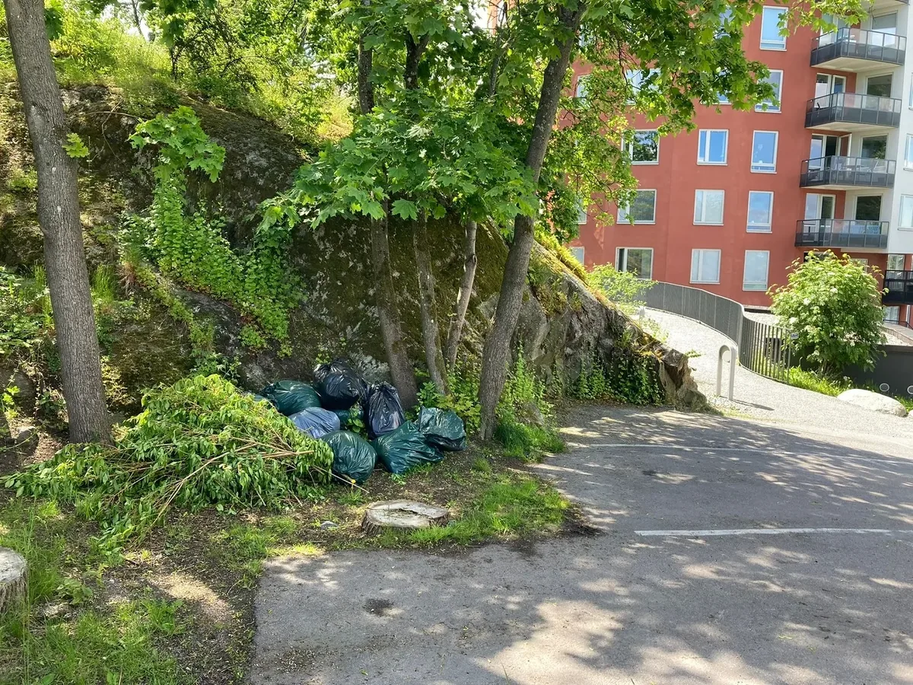
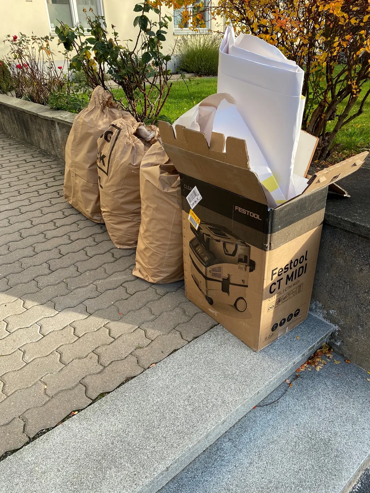
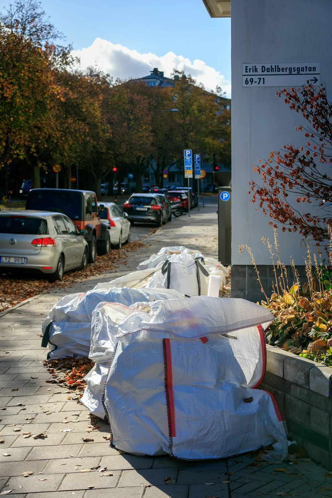

Hämta byggsäckar
Har du renoverat eller kanske rensat i trädgården och har nu en massa byggsäckar som du behöver bli av med? Att slänga byggsäckar på rätt sätt kan vara krångligt och tidskrävande. Låt oss ta hand om jobbet, vi hämtar dina byggsäckar direkt hos dig, oavsett var i stockholm du bor.
-
4,9 av 5 på Reco231 omdömen från kunder
-
Hemma i Stockholm och LidingöAuktoriserade i 9 kommuner
-
Egen personalEgna chaufförer och egna bilar
-
Snabb uppstartKärl och skyltar ingår, hämtning inom veckor

Hur funkar det vid hämtning av byggsäckar?
- Beställ hämtning, Boka direkt via vår hemsida eller ring oss för att bestämma tid och plats.
- Packa säckarna - Packa dina byggsäckar ordentligt.
- Vi hämtar på plats - Vi kommer och hämtar byggsäckarna på en tid som passar dig.
- Vi sorterar och återvinner:, Vi kör materialet till återvinning och ser till att allt tas om hand på ett miljövänligt sätt.
Vad kostar det med upphämtning av byggsäck?
Kostnaden för upphämtning av byggsäck varierar mellan 600 och 1500 kr, beroende på antalet säckar och deras storlek. Mindre säckar och ett lägre antal säckar ligger i den lägre prisklassen, medan större säckar eller ett större antal säckar kan påverka kostnaden uppåt.
För en exakt offert baserad på dina specifika behov, vänligen kontakta oss. Vi erbjuder konkurrenskraftiga priser och pålitlig service för att säkerställa att ditt byggavfall hanteras på ett effektivt och miljövänligt sätt.

Vilka typer av avfall kan jag lägga i en byggsäck?
En byggsäck är ett praktiskt verktyg för att hantera olika sorters avfall som uppstår vid renoveringar, byggnationer eller andra typer av städprojekt. Nedan beskrivs mer utförligt vilka typer av avfall som kan läggas i en byggsäck samt vilka restriktioner som gäller.
Bygg- och rivningsavfall
Under renoveringar och byggprojekt uppstår en mängd bygg- och rivningsavfall som lämpligen kan placeras i byggsäckar. Dessa material inkluderar:
- Tegel och betong: tunga material som ofta kommer från rivning av väggar och andra strukturer.
- Trä: inkluderar gamla plankor, reglar och annat trämaterial som tas bort under renoveringar.
- Gips: används i väggkonstruktioner och tak.
- Metaller: såsom järn, koppar och aluminium, ofta från rör, tak och ramkonstruktioner.
- Plast: kan innefatta olika former av byggplast och folier.
- Glas: från fönster eller glasdörrar.
- Isoleringsmaterial: som stenull, glasull och skumisolering.
Hushållsavfall
Förutom bygg- och rivningsavfall kan hushållsavfall som uppkommer dagligen också läggas i byggsäckar:
- Matavfall: som rester från köket.
- Pappersförpackningar: tidningar, kartonger och annat pappersmaterial.
- Plastförpackningar: PET-flaskor, plastpåsar och andra typer av plastemballage.
- Glasförpackningar: inkluderar glasflaskor och burkar.
- Metallförpackningar: konservburkar och liknande metallbehållare.
Trädgårdsavfall
Trädgårdsavfall kan även det hanteras med hjälp av byggsäckar, vilket gör dem idealiska för större trädgårdsprojekt:
- Gräs, grenar, löv och häckklipp: Perfekt för att samla upp allt trädgårdsavfall efter en dag av trädgårdsarbete.
Får ej läggas i byggsäck
Det är dock viktigt att notera att vissa typer av avfall inte bör läggas i byggsäckar på grund av deras potentiella farlighet eller specialiserade återvinningskrav:
- Farligt avfall: inkluderar asbest, olika kemikalier, målarfärg och lösningsmedel.
- Elektronik: som gamla datorer, telefoner och andra elektroniska apparater.
- Batterier: på grund av deras korrosiva och potentiellt farliga egenskaper.
- Däck: som kräver speciella återvinningsprocesser.
- Läkemedel: som ska hanteras separat för att förhindra miljökontaminering.
Vanliga frågor kring hämtning av byggsäck
Vilken typ av byggsäck ska jag använda?
Det finns olika typer av byggsäckar för olika ändamål. Till exempel finns det säckar för tungt avfall, säckar för skrymmande avfall och säckar för farligt avfall.
Var kan jag köpa byggsäckar?
Du kan köpa byggsäckar hos oss.
Hur sorterar jag mitt avfall i en byggsäck?
När du använder byggsäckar för avfallshantering är det viktigt att sortera avfallet korrekt för att underlätta återvinning och hantering. Börja med att skilja på bygg- och rivningsavfall, hushållsavfall, och trädgårdsavfall. Se till att farligt avfall som kemikalier och elektronik hålls separat, eftersom dessa inte får placeras i vanliga byggsäckar. Använd tydligt märkta säckar eller behållare för olika typer av avfall för att undvika korskontaminering.
Vilka storlekar kan ni hämta på byggsäckar?
Vi kan hämta alla typer av byggsäckar, oavsett storlek. De vanligaste storlekarna vi hanterar är small, medium och large. Små byggsäckar passar perfekt för mindre mängder avfall, som renoveringsrester eller trädgårdsavfall. Medelstora byggsäckar är idealiska för måttliga mängder bygg- och trädgårdsavfall, medan stora byggsäckar kan hantera större mängder avfall, såsom rivningsmaterial eller stora renoveringsprojekt. Oavsett vilken storlek du har, kan vi säkerställa en smidig och effektiv upphämtning.
Vad får jag lägga i en byggsäck?
De flesta typer av avfall som uppstår vid renovering eller byggnation kan läggas i en byggsäck. Se dock till att inte lägga farligt avfall i en byggsäck.
Berätta om er fastighet, så återkommer vi med pris
Fyll i formuläret så hör vi av oss inom en arbetsdag, oftast samma dag.
- Kostnadsfritt platsbesök
- Fast pris per hämtning, kärl och skyltar ingår
- Egen personal och egna bilar
Vill du hellre ringa?08-684 278 88